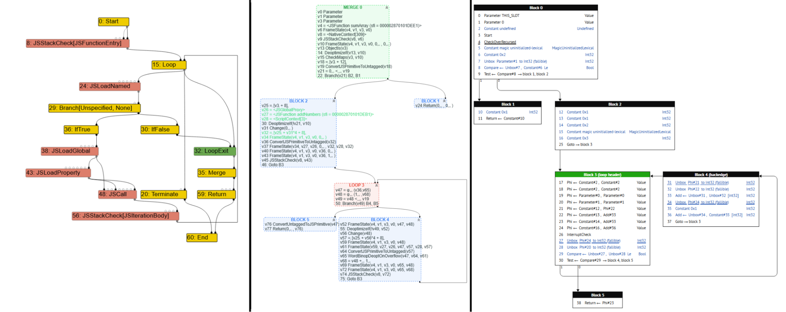
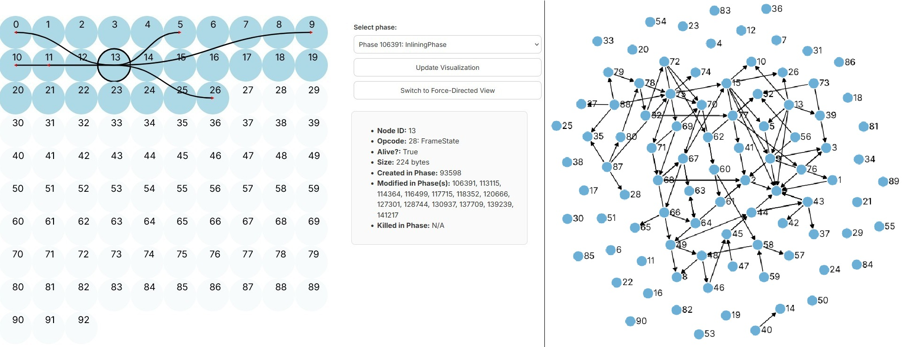
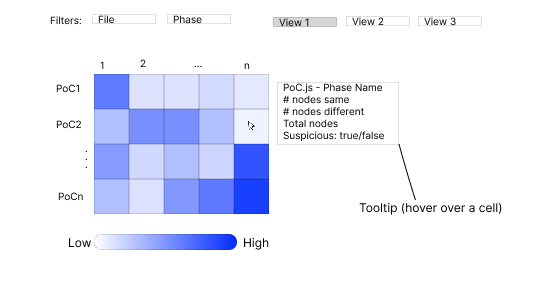
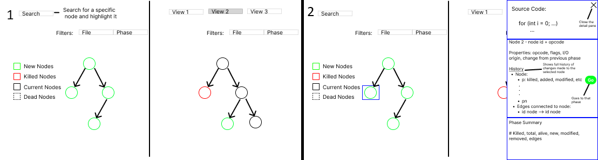
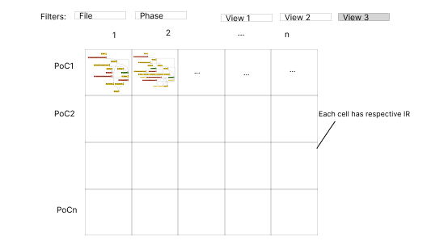
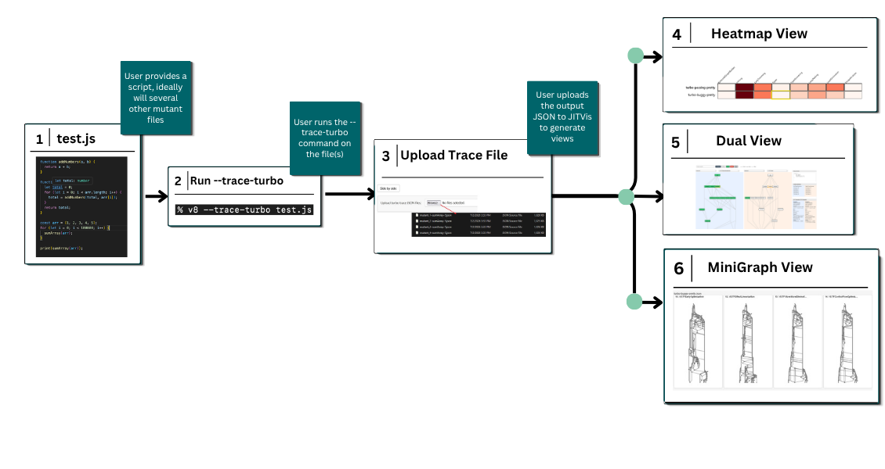
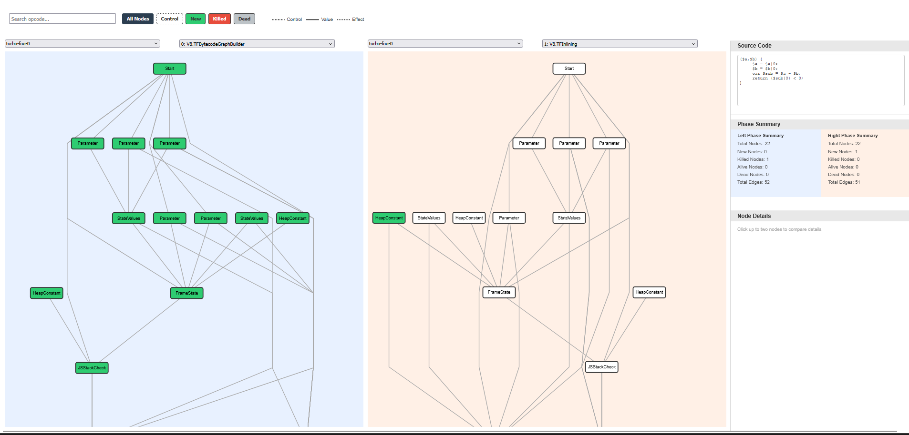
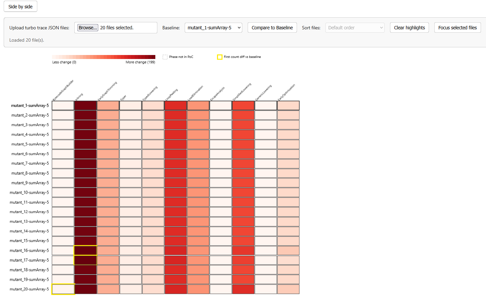
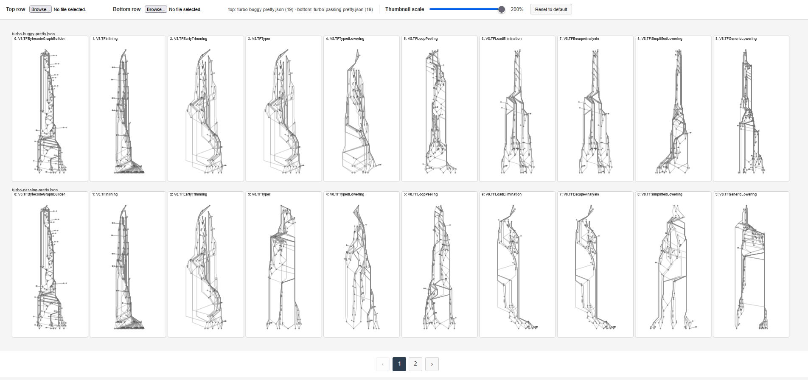

JITVis Summer Research
A visualization tool for debugging Google Chrome's V8 Just-In-Time compiler — combining a heatmap, dual IR view, and minigraph to help compiler experts compare mutant traces across optimization phases.
View project on GitHubBefore I joined this project, Taft Harrell and Ellora Devulapally, two Davidson College graduates, had already taken the first steps toward visualizing compiler intermediate representations. Their prototype loaded trace files into two views: a static grid of numbered nodes and edges, and a force-directed layout intended to automatically organize the data. As graphs grew denser, the force-directed view collapsed into unreadable "hairballs," and the static grid still made it hard to follow dependencies across phases. Initially, my job was to analyze what Taft and Ellora had already developed, along with the literature behind graph visualization with the goal of creating something more readable.
Eventually, Dr. Williams, my mentor, Olivia Burls, my partner, and I began developing JITVis: a visualization tool for debugging Google Chrome's V8 Just-In-Time (JIT) compiler. Over the summer, our team studied V8's optimization pipeline, reviewed visualization research, and interviewed compiler experts at Google about how they work with tools like Turbolizer and iongraph, two tools that visualize changes made to code by a compiler. The result is JITVis — a tool combining a heatmap for comparing many mutant traces across optimization phases, a dual view for detailed IR analysis, and a minigraph for scanning IR structure. Built with D3.js and informed by expert feedback, JITVis aims to help debuggers find where a compilation diverges without needing to scan thousands of nodes across multiple graphs.
Compilers are software that translate human readable code (i.e. languages like C/C++ or Rust) into lower level machine code. Compilers simultaneously make optimizations to code during the translation, decreasing the runtime of code by leaps and bounds. These optimizations are crucial for websites and search engines, which demand fast startup and runtimes. In fact, speed is so crucial that web browsers, like Google Chrome and Firefox, use a special class of compiler, known as a JIT compiler. JIT compilers have faster startup times compared to regular Ahead-of-Time compilers, and make optimizations during the code's runtime. However, the changes JIT compilers make are difficult to track, so bugs tend to be more difficult to find.
This is where our work comes in. As newcomers to compiler development, we studied Google V8's entire compilation pipeline, learning how exactly input code is optimized while studying pre-existing debugging strategies used by experts. We analyzed data visualization literature and used our findings to develop JITVis. We interviewed a V8 compiler expert on their entire workflow, including techniques they employ when using Turbolizer, outside tools used to generate test cases, and any other knowledge we can use to improve their workflow. We hope JITVis reduces tab-switching and manual cross-file comparisons for compiler experts, while addressing other weaknesses in preexisting alternatives, such as Google's Turbolizer, or Firefox's iongraph.
Background
JIT compilers process human-readable code into machine code in distinct phases. These phases each contain Intermediate Representations (IRs). IRs are essentially a transitory state to make code easier to analyze for the compiler. IRs are represented as graphs, such as Sea-of-Nodes (SoN) or Control Flow (CFG) graphs. Google developers currently visualize these changes by using V8's --trace-turbo command on JavaScript files to produce a .JSON trace file to be uploaded to Turbolizer. Iongraph is an alternative that only supports the CFG layout. Both show each IR phase's respective graph, and Turbolizer specifically has the added benefit of source-code-to-node linkage.

However, there are a few key flaws with both tools:
- Even though Turbolizer and iongraph save users the trouble of reading thousands of lines of text outputs, they require debuggers to parse several phases, looking for specific nodes and edges that may cause bugs.
- In data visualization, giving users multiple different ways to view the same data often helps in generating insight, hence data abstraction is useful. However, Turbolizer and iongraph only provide users with each phase's raw IR data.
- Compiler debuggers will often mutate code to simulate and pinpoint specific compiler bugs. When using several mutations, the debugger will now have to compare data across phases and files. Neither tool supports multiple file inputs — a user would have to upload each mutation in a separate Turbolizer or iongraph instance.
- Debuggers will often switch between viewing the raw JSON text dump and the compiler graphs, which can be tedious. Neither tool centralizes context switching.
- A V8 compiler expert we interviewed emphasized that Turbolizer can be annoying to use due to long load times when uploading larger graphs due to poor optimization.
At the recommendation of Dr. Lim, a compiler expert at Davidson, and our own discretion, JITVis provides two overviews that allow debuggers to quickly locate specific compiler phases, and an additional detail view containing a maximum of two IR graphs of the user's choosing for lower level, phase-by-phase analysis.
Initial Steps
To start, I needed to catch up on what had already been done thus far. Taft and Ellora had already created a force-directed layout, based on a trace file format alternative to Google V8's.

The force-directed layout fell victim to the hairball effect — the volume and density of the nodes and edges caused the diagram to look unreadable in certain phases, while the static view did not provide any convenient sorting of node positions to make tracing dependencies easier. As such, we decided to abandon the first prototype in favor of something more usable. We conducted a short literature review to find the most ideal graph layouts. My area of focus was on representing changes over time, which in our case meant changes made to IRs across phases. My findings included:
- There are two main schools of thought when it comes to representing change over time — representation through animation, and representation through small multiples. Small multiples refers to representing changes made over time side-by-side, frame-by-frame. Small multiples tend to be more beneficial for data analysis than animation.
- Interactivity was consistently found to improve insight-finding.
- Many tools included multiple different data representations.
My findings were consistent with Olivia's, making us confident enough to draft a mockup visualization.



After designing our mockups, we presented them to Dr. Lim, who liked our idea of an easier way to compare two IR graphs, and our overviews which can be used to more easily find suspicious files for further analysis. After receiving the green light from Dr. Williams, we began developing our prototype visualization.
JITVis Walkthrough
We present JITVis — a tool designed to streamline the JIT compiler debugging process, providing several helpful views in one centralized program.




Creating the Heatmap
Currently, our main tool consists of the dual view and the heatmap view, the latter of which I was tasked with the development of. I implemented a feature in which users can select a "baseline" file to compare differences in nodes per phase with, similar to what a compiler developer might do when searching for suspicious mutant files. The first phase in all other files that differs from the baseline will be highlighted in yellow, making it easier to track diverges in optimization.
While Dr. Lim and Robbie are still working on a more robust metric to determine the suspiciousness of cells in the heatmap, we realized the coarse metric we are currently using actually had a use, as it was successful in determining the first file with relevant differences from the baseline in one example. Furthermore, I added a feature that allows users to highlight files of interest, and sort files based on how much or how little they diverge from the baseline, and a button to filter out all non-highlighted files.
Minigraph Proof-of-Concept
While the minigraph view has not been incorporated in the main tool yet, I developed a proof-of-concept for the view as we deliberate on how best to incorporate it. It uses Olivia's graph drawing algorithm to render small, transparent graphs. The size of each graph is changeable dynamically using the slider in the top bar. Currently, users can only select two files to display each phase, but ideally, it would automatically load in all of the files that have previously been selected, but filter out all of the cells except for the ones the user is interested in, to reduce cognitive load.
Throughout the summer, we drafted and developed JITVis to address current gaps in Google V8's Turbolizer, and Firefox SpiderMonkey's iongraph. JITVis provides users with three different views — a dual view, heatmap, and minigraph view — grounded by data visualization research and informed by interviews with compiler experts at Google.
However, JITVis is still in its infancy. Planned next steps include a new heatmap metric for suspiciousness, linked navigation across views, implementing the minigraph proof-of-concept in the main visualization, AI-assisted summaries of the data, and streamlining the V8 expert's existing workflows. In the long-term, we want JITVis to centralize the expert workflow, including graphs, phase comparisons, and later textual outputs.